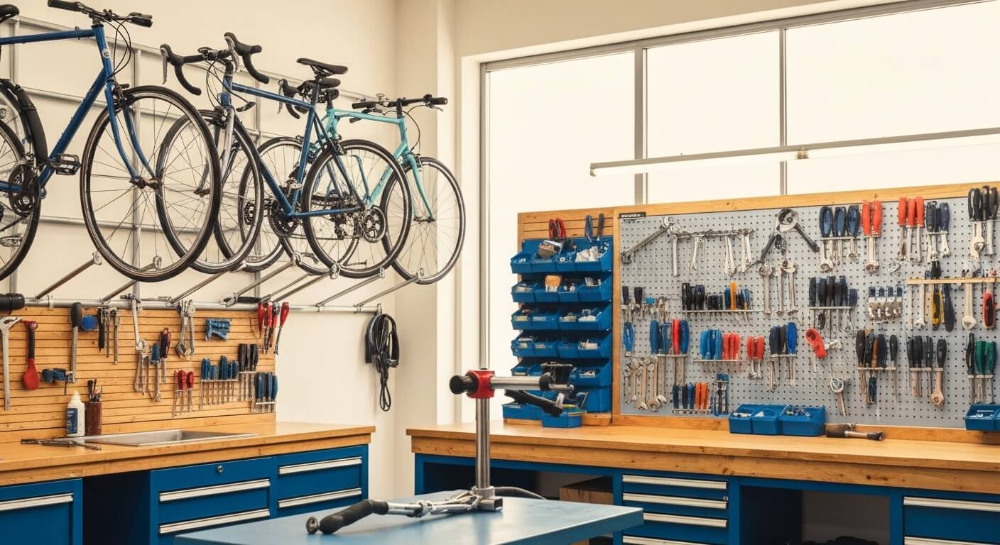
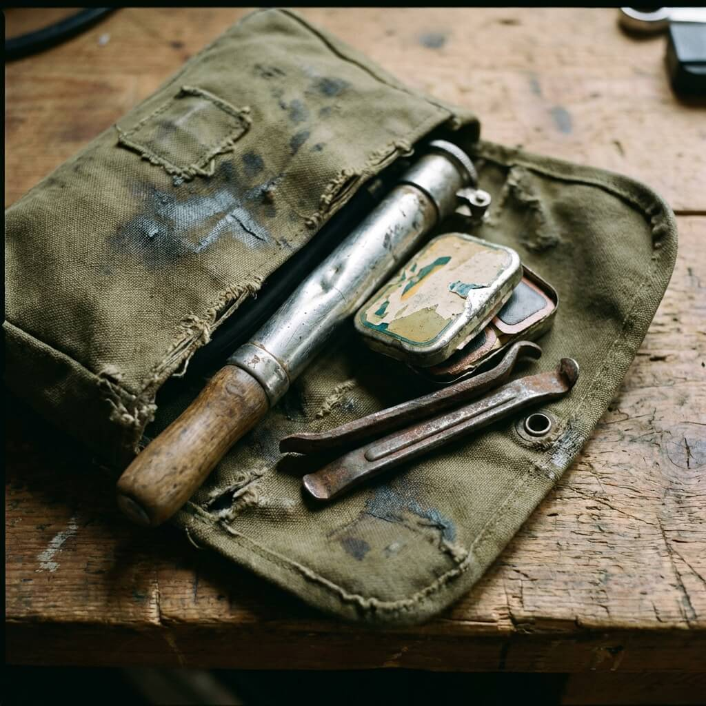
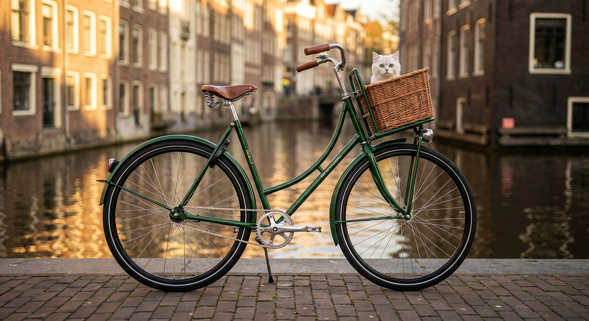
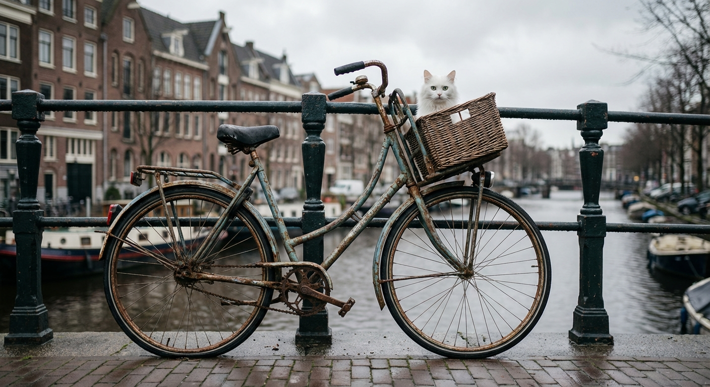
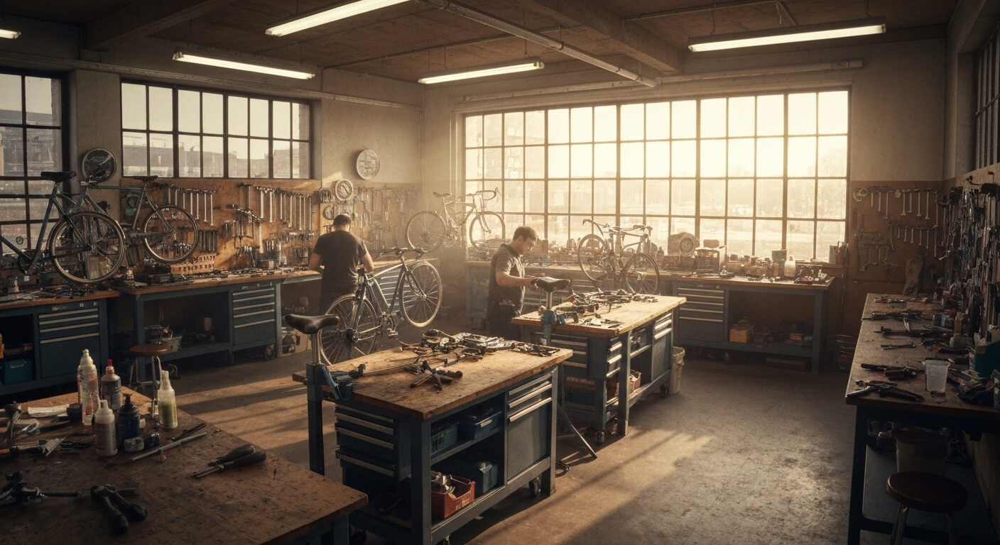

Onderhoud
De 5 belangrijkste onderhoudstips voor uw fiets
Eenvoudige stappen die u zelf kunt doen om uw fiets langer mee te laten gaan.
Lees meer →Eerlijke reparaties, groen onderhoud en persoonlijk advies. Breng uw fiets langs en wij zorgen voor de rest.

Van lekke band tot gebroken ketting. Wij repareren elke fiets snel en betaalbaar.
Regelmatig onderhoud voorkomt problemen. Wij houden uw fiets in perfecte staat.
Software-updates, accudiagnose en motoronderhoud voor alle e-bike merken.
Nieuwe banden, wielcentreren en spaakspanning. Voor een soepele rit.
Uw ideale fiets samengesteld uit de beste onderdelen. Volledig op maat.
Complete wintercheck: verlichting, remmen, banden en bescherming tegen vorst.


TweeFiets is ontstaan vanuit een simpel idee: fietsen repareren zoals het hoort. Eerlijk, transparant en met respect voor het milieu. Onze werkplaats aan de Witte de Withstraat is uitgegroeid tot een ontmoetingsplek voor iedereen die van fietsen houdt.
Wij gebruiken waar mogelijk duurzame onderdelen en recyclen alles wat we kunnen. Omdat een groener Rotterdam begint op twee wielen.
Sleep de slider om het resultaat te zien.



Complete restauratie met nieuwe lak en moderne remmen

Van klassiek naar elektrisch in drie dagen
Lichtgewicht stadsfiets op maat gebouwd

Precision-built voor wedstrijdgebruik
Loop binnen of maak een afspraak. Geen wachttijden, direct geholpen.
Wij bekijken uw fiets en geven een eerlijke inschatting van kosten en tijd.
Onze monteurs gaan aan de slag met kwaliteitsonderdelen.
Elke fiets wordt getest voordat u hem terugkrijgt. Gegarandeerd goed.
Eenvoudige stappen die u zelf kunt doen om uw fiets langer mee te laten gaan.
Lees meer →
Praktische tips om uw accu jarenlang optimaal te laten presteren.
Lees meer →
Alles wat u moet weten om veilig de winter door te fietsen.
Lees meer →De voordelen van een fiets die perfect bij uw lichaam en stijl past.
Lees meer →Te hard of te zacht? Ontdek de ideale bandendruk voor uw fietstype.
Lees meer →De beste sloten, tips en verzekeringen om uw fiets veilig te houden.
Lees meer →Breng hem vandaag nog langs of maak een afspraak. Wij staan voor u klaar in hartje Rotterdam.
Plan uw afspraak